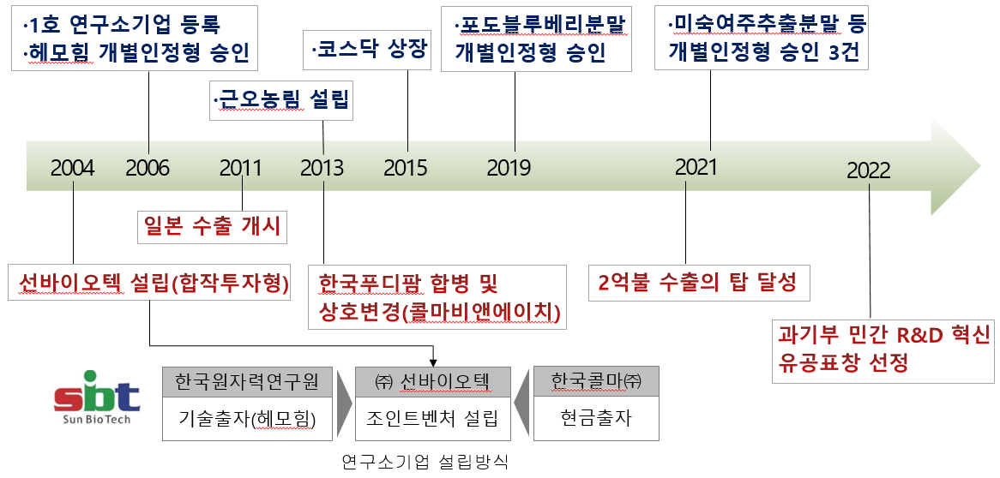
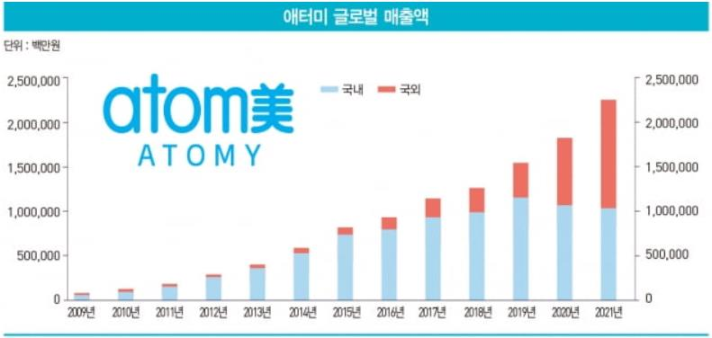
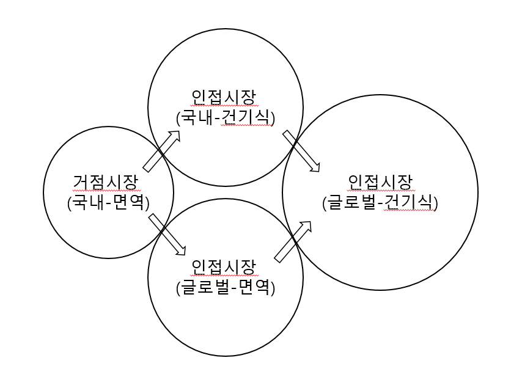
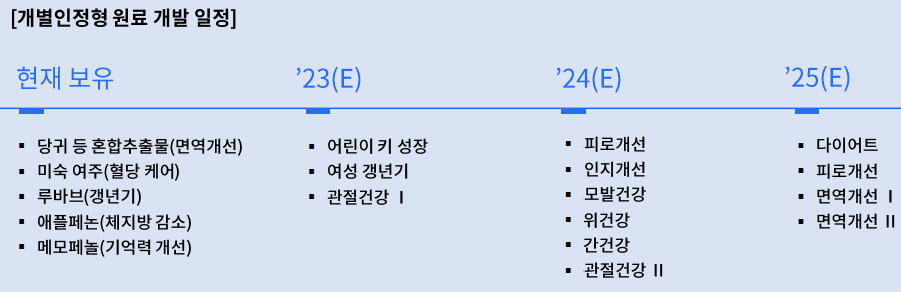

2006년 대덕특구 제1호 연구소기업으로 등록된 콜마비앤에이치㈜는 한국원자력연구원으로부터 헤모힘 관련 기술을 이전받아 면역기능개선 건강기능식품으로 사업화하는 데 성공했고, 이후 해외시장 개척과 시장 확장을 통해 2015년 상장 이후에도 CAGR 12%의 성장을 기록하고 있다. 본 사례연구는 이 회사가 어떻게 출자기술 사업화와 시장진입에 성공했고, 이후 어떤 전략으로 다른 시장에 진출했는지를 진입전략과 확장전략의 관점에서 분석한다.
- 2006년 대덕특구 제1호 연구소기업으로 등록된 콜마비앤에이치㈜는 한국원자력연구원으로부터 헤모힘 관련 기술을 이전받아 면역기능개선 건강기능식품으로 사업화하는 데 성공했으며, 해외시장 개척과 시장 확장을 통해 2015년 상장 이후에도 CAGR 12%의 성장을 기록하고 있다.
- 콜마비앤에이치는 초기 사업화 단계에서 거점시장을 잘 선택하여 진입했으며, 이후 합병·해외진출·원료 경쟁력 강화 등 확장전략을 통해 건강기능식품 OEM/ODM 분야의 강자로 발돋움했다.
- 연구소기업과 같은 초기 기업은 핵심역량을 바탕으로 진출 가능한 거점시장을 명확히 타겟하여 진입전략을 세우고, 이후 연계된 인접시장으로 확장하는 것이 주요하다는 시사점을 준다.
1. 연구배경 및 연구목적
공공연구성과의 직접 사업화를 위해 만들어진 연구소기업은 2006년 제1호 콜마비앤에이치㈜를 시작으로 누적 설립 1,569호를 돌파했으며(2022년 12월 기준), 2021년 기준 총 매출액 11,268억 원, 총 고용인원 6,007명의 경제적 성과를 창출하고 있다. 연구소기업 제도 제정 후 총 5개사(콜마비앤에이치, 수젠텍, 신테카바이오, 진시스템, 마인즈랩)가 상장했는데, 상장 이후에도 지속적인 성장세를 보인 것은 콜마비앤에이치뿐이다.
기존 문헌들은 콜마비앤에이치의 성공요인을 연구자의 능력과 열정, 파트너 기업의 경험, 연구소의 정책지원(최종인, 2012), 기술·시장·사업주체역량 요인(함형욱, 2015), 자원기반적 요인과 네트워킹(이종환, 2019) 등으로 분석해왔다. 그러나 초기 헤모힘 기술사업화 성공 후 어떤 과정을 거쳐 제품과 고객 채널을 다변화하며 성장했는지를 설명한 연구는 없었으므로, 본 사례연구가 이를 다룬다.
2. 이론적 배경
2.1 연구소기업
연구소기업은 공공기술의 직접사업화를 촉진하기 위해 만들어진 제도로, 연구개발특구 내 설립·설립기관 지분 10% 이상 보유 등 요건을 충족하면 「연구개발특구육성에 관한 특별법」 제9조에 따라 과학기술정보통신부 장관 승인을 받아 등록된다. 연구기관의 기술력과 민간의 자본·경영을 결합해 R&D–사업화–재투자의 선순환 생태계를 조성하는 것이 목적이며, 설립 유형은 합작투자형·기존기업전환형·신규창업형으로 나뉜다. 공공연구기관의 기술을 가지고 사업을 시작하므로 강력한 기술원천을 가진다는 특징이 있다.
2.2 거점시장(Beachhead Market)과 인접시장(Adjacent Market)
Bill Aulet(2013)의 'Disciplined Entrepreneurship' 24단계 프레임워크에 따르면, 거점시장은 비교적 소규모이지만 고도로 표적화된 시장 세그먼트로, 초기에 진입해 점유율을 높인 뒤 그 기반 위에서 더 큰 시장으로 확장할 기회를 제공한다. 거점시장 진입에는 시장 이해와 세분화, 가치 제안 개발, 단일 메시지 전달, 효과적인 제품/서비스 배포가 필요하며, 이후 거점시장에서의 성공을 토대로 인접시장의 고객 요구에 맞춰 가치 제안과 배포 전략을 재조정하며 확장할 것을 권장한다.
2.3 핵심역량(Core Competency)
Hamel과 Prahalad(1990)는 핵심역량을 기업이 경쟁 우위를 확보하기 위해 반드시 개발·유지해야 하는 핵심 능력으로 정의했다. 핵심역량은 고객 가치를 창출하고, 경쟁사가 쉽게 복제하기 어려워야 하며, 다양한 제품 라인이나 시장 진입에 활용될 수 있어야 한다.
3. 대상 시장 개요: 건강기능식품
건강기능식품은 인체에 유용한 기능성을 가진 원료나 성분을 사용해 제조한 식품으로, 반드시 동물실험·인체적용시험 등 기능성과 안전성 평가를 거쳐 식품의약품안전처의 인정을 받아야 제조·판매가 가능하다. 2021년 국내시장 규모는 약 5조 원, 2022년은 약 6조 1,429억 원으로 추정되며 코로나19의 영향으로 최근 3년간 거의 매년 20%에 육박하는 성장률을 보였다. 2022년 세계시장 규모는 약 230조 원에 달한다.
핵심은 기능성 원료다. 홍삼·프로바이오틱스·비타민 등 독점적 권리가 없는 고시형 원료와 달리, 개별인정형 원료는 식약처장이 개별적으로 기능을 인정한 원료로 해당 업체만이 제조·판매할 수 있는 독점적 권리를 가지며 훨씬 높은 마진율을 보인다. 개별인정형 건강기능식품의 매출 비중은 2017년 약 11%에서 2021년 약 21%로 높아졌다. 다만 개별인정형 원료 개발에는 평균 10억 원의 개발비와 약 7년의 기간이 소요된다.
4. 대상기업 소개
콜마비앤에이치㈜는 2004년 2월 한국콜마(현금 약 6.2억 원)와 한국원자력연구원(기술 약 3.8억 원)이 공동 설립한 합작투자형 연구소기업 ㈜선바이오텍이 모태다. 2006년 제1호 대덕특구 연구소기업으로 지정됐고, 2012년 한국푸디팜을 흡수합병하며 콜마비앤에이치로 사명을 변경했으며, 2015년 스팩합병으로 코스닥에 상장했다. 2022년 연결 기준 매출액은 5,759억 원이다.

대표 제품인 '헤모힘'은 원자력연구원 조성기 박사 연구팀이 약 8년간 연구 끝에 개발한 생약복합조성물로, 당귀·천궁·백작약 뿌리를 동일 무게 비율로 혼합해 열탕 추출하는 방식이다. 국내 고유기술로 개발된 조성물이 건강기능식품으로 인증된 첫 신물질이며, 면역기능 개선 효능이 입증되어 식약처 개별인정형 원료로 인정받았다. 헤모힘은 현재 콜마비앤에이치 매출의 약 20%를 차지하는 메가히트 상품이다. 회사는 이러한 원료 파이프라인과 제형 개발·생산 능력을 바탕으로 애터미, 유한양행, 이마트, 종근당 등 국내외 300여 개 기업에 B2B 방식으로 영업하고 있으며, 음성·세종 공장을 통해 연간 약 5천억 원의 생산능력을 보유하고 있다.
5. 혁신사례 분석
5.1 초기 시장진입 전략
헤모힘의 제도적 인정 과정은 순탄치 않았다. 2004년 1차 건강기능식품 원료 인정 신청은 원료 함량과 표준화 문제로 거절됐고, 원자력연구원과의 국책과제를 통해 동물 효능 검증과 준건강인 대상 임상효능 설계 노하우를 축적한 끝에 2006년 8월에야 식약처 인정을 취득했다. 다류상품으로만 팔리던 헤모힘이 1호 면역기능개선 효능을 인정받자 2007년 매출액은 4배 가까이 상승했다.
그러나 이후 매출 성장이 미미하던 회사는 2009년 마케팅 파트너로 다단계 유통사 애터미를 만나면서 급성장하게 된다. 애터미는 회원 신뢰도를 높이기 위해 헤모힘이 생산되는 콜마비앤에이치 공장을 직접 견학하고 사옥에서 원데이 세미나를 개최하는 등 기업의 기술과 생산능력을 지속적으로 강조하며 회원수를 늘렸다.

초기 헤모힘은 높은 생산단가 탓에 60포에 77만 원이라는 접근성이 아주 낮은 가격대였다. 그러나 애터미를 통한 지속적인 수요가 발생하자 생산 설비 가동률을 끌어올리고 원료 탱크 사이즈를 키우며 규모의 경제를 이룩했다. 원료 추출·농축, 파우치 충진, 살균, 건조·포장까지 자동화 라인을 구축해 30포에 14만 8천 원으로 판매단가를 낮췄고, 이후 1세트 7만 6,500원으로 거의 10분의 1 수준까지 가격을 낮춰 대표적인 면역기능 강화 상품인 홍삼 제품과도 경쟁할 수 있게 되었다.
5.2 인접시장(Adjacent Market)으로의 확장 전략
거점시장 안착 이후 콜마비앤에이치는 인접시장의 잠재력과 우선순위를 고민해 글로벌 면역시장을 먼저 타겟으로 하고, 이후 국내 건강기능식품 시장, 최종적으로 글로벌 건강기능식품 시장으로의 진출을 계획했다.

해외시장 진출. 2010년 미국을 시작으로 일본, 캐나다, 대만, 싱가폴, 러시아, 호주, 중국 등 현재 25개국에 제품을 수출하고 있다. 2013년 500만불 수출의 탑을 시작으로 2020년 1억불, 2021년 2억불 수출을 달성했으며 현재는 매출의 30% 이상이 수출에서 발생한다. 미국은 헤모힘이 개발단계인 2004년에 이미 FDA 검사로 안전성을 입증받고 특허 등록을 마친 상태였고, 네트워크 마케팅의 종주국이라는 특성에 맞춰 애터미 현지 법인 설립과 대중명품(저가격, 고품질) 전략으로 진출에 성공했다. 반면 중국은 강소콜마(2,000억 원 CAPA의 ODM 생산기지)와 애터미 합작법인 연태콜마를 설립하는 현지화 방식으로 진출했으며, 2022년 기준 주요 수출국 비중에서 중국이 약 50%를 차지한다.
한국푸디팜 합병. 헤모힘 사업화에는 성공했지만 여전히 화장품 매출 비중이 높아 식품 분야 강화가 필요했던 콜마비앤에이치는 2012년 한국푸디팜과의 합병을 결정한다. 정화영 대표는 노바렉스의 전신인 렉스진바이오텍 창립멤버로 약 10년간 영업을 총괄한 건강기능식품계 전문가였고, 한국푸디팜은 이미 2011년 104억 원의 매출을 올리며 LG생활건강, 종근당바이오 등에 다이어트식품과 복합영양제를 납품하고 있었다. 이 합병으로 OEM 생산능력 강화와 새로운 고객채널 확보가 가능해졌으며, 정화영 대표는 기존 김치봉 대표이사와 공동대표로 선임되었다.
OEM/ODM 역량 강화. 초기에 제품화기술에 특화되었던 콜마비앤에이치는 천궁·당귀·백작약의 계약재배 원칙과 전 공정 품질검사로 반품률 0.08%를 달성했고, 2012년 세종에 헤모힘 전용 생산공장을 준공해 자동화 공정을 강화했다. 이후 컬러 Multi tip형 정제, 식물성 연질캡슐, 츄어블, 발포제형, 트로키 정제 등 맞춤형 제형 개발 능력을 확보하며 이마트, 유한양행 등으로 고객을 다변화했다. 또한 오픈 이노베이션 기반의 공동연구(C&D 과제)로 20개 이상의 개별인정형 신규 원료 개발 파이프라인을 갖췄다. 농촌진흥청·경상대학교 등과 6년의 연구를 거쳐 2021년 개별인정형을 획득한 미숙여주주정추출분말이 대표적으로, 2022년 유한양행을 통해 출시한 '유한 혈당케어 여주 S52'는 약 50억 원의 매출을 기록했다.

5.3 경쟁사와의 비교분석 — 노바렉스
주요 경쟁사 노바렉스는 자체 원료개발 기술 없이 생산역량에 중점을 두고 국내 건강기능식품 OEM 시장을 거점시장으로 진출한 뒤, 자체 원료개발로 국내 최다인 40건의 개별인정형을 보유하게 된 업체다. 그러나 시장 내에서 강력한 파급효과를 갖는 파이프라인은 구축하지 못했고, 해외시장 개척도 개별 고객사를 컨택해 계약하는 방식에 의존해 2021년 수출액 비중이 3%에 불과했다. 소품종 대량생산으로 평균 15%에 육박하는 영업이익률을 보인 콜마비앤에이치와 달리, 다품종을 생산하는 노바렉스는 업계 평균 수준인 10~12%의 영업이익률에 머물며 투자에서도 뒤처졌다. 즉 노바렉스는 초기 거점시장 진출에는 성공했으나 인접시장 식별 과정에서 자신의 제품이 바로 적용될 수 있는지를 제대로 파악하지 못했고, 이것이 맞춤형 전략 개발의 실패로 이어져 업계순위를 내주게 된 것이다.
6. 결론 및 시사점
- 전략 관점의 성공요인: 그간 연구소기업 문헌은 기술역량, 기업가역량, 창업자 의지 등 역량 관점으로 성공요인을 분석해왔으나, 본 연구는 시장에 대한 진입전략과 확장전략이 더 주효할 수 있음을 시사한다.
- 거점시장을 혼동하지 말 것: 연구소기업은 강력한 기술원천을 가지고 시작하기 때문에 기술적 역량을 과신하여 전체시장과 거점시장을 혼동하는 경우가 종종 발생한다. 명확하게 세그먼트된 시장에 진출을 시도하고, 제안하는 가치와 메시지를 일관되게 전달해야 한다.
- 인접시장으로의 확장: 진출한 거점시장을 바탕으로 연결된 인접시장으로의 확장을 시도하는 것이 중요하다.
- 연구의 한계: 단일 사례를 대상으로 진행되었기에 향후 다른 연구소기업을 대상으로 한 추가 연구가 필요하다.